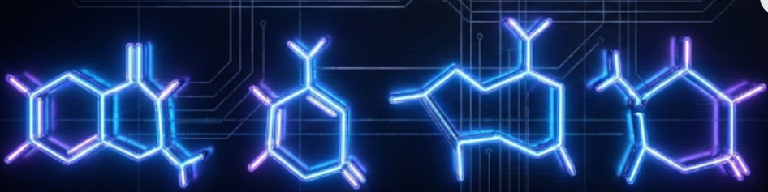

Chapter 2: Roots Of Science — Section XIII
"The DNA molecule has 26 parts... The bases GTCA are the four letters of the Divine Name." — The Code of Life.
View: BIOLOGICAL. Guanine, Thymine, Cytosine, Adenine.
The Code of Life
Each particle in the physical realm contains a letter. The DNA molecule has 26 components in its backbone, equal to the numerical value of the Tetragrammaton ($Y-H-V-H$). The bases GTCA correspond to the four letters:
- Adenine (A) = Aleph/Yod
- Guanine (G) = Gimel/Hei
- Cytosine (C) = Vav
- Thymine (T) = Hei

Each nucleotide corresponds to the Name 72 (Kindness), while the mRNA corresponds to the Name 22 (Beauty/Proteins). The tertiary structure of proteins mirrors the shapes of the Hebrew letters.
Finite Infinity
Though there are infinitely many Feynman diagrams, the "renormalized" electron is finite. This is mathematically parallel to the integral of $1/x^2$ (or similar functions) which has finite area despite infinite length:
$$ \int_1^\infty \frac{1}{x^2} dx = 1 $$
This shows how the Strange Loops that encompass infinite creation can be brought down to a single, finite point.